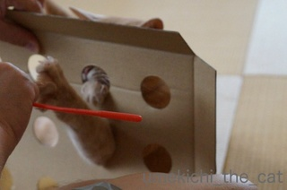

指もぐらたたき [梅吉]

梅吉さん！出来たんですよ！！あの箱を使って
短時間で飲みきるには勿体無いビールだったのでとりあえず箱だけ空けましたよ。
ちょいちょい（※指 おっと）

ちょいちょい
ちょいちょいちょいっ
あれ？梅吉さん？梅吉さん？！どこいくんですか？？！！
なぜか急に興味を失なった模様www
おっとの指が哀しい・・・・・・
梅吉さん
猫飼いのむなしい瞬間でございました。

嵐の前の静けさ [梅吉]


びっくり遊び [梅吉]


梅吉さんの不可解な行動 [梅吉]
梅吉さんの日々「なんでや？」という行動。
足を乗せているのはMacの電源コード。やめて、やめて〜〜〜っ
鏡をぢっとみつめます。
お風呂のお湯加減は体を張って確認してくれます。
ニンゲンの朝の身支度の時間にはここでお寛ぎになります。泣。
眠くなるとキッチンのカウンターの上、炊事の水がバシャバシャはねるあたりへ。
熟睡時には5本中4本を不安定な位置へ。
見てるこっちの方が落ち着かんわっ。
梅吉さんは不思議ちゃんですね＾＾
タグ：不思議ちゃん
猫も喜ぶお届け物 [梅吉]

おっとがネットでこんなビールをお買い上げ。

あららら、こんなものが入っていました。
やっぱり来ました梅吉さん。中身は人間が、付属物は梅吉さんが喜ぶお届け物。
さっそくおとーさんが（に？）遊んでもらいました。

梅吉さんダンボールが歪んできましたよ〜。
ビールが入っている箱の方が空いたら猫もぐらたたきみたいなのを作りたいのに
それまで穴開きダンボールは無事なんでしょうか。
暑いは得意 [梅吉]
昨日の大阪は38℃越え。どおりで日中歩いていたらクラクラするはずです。
暑くても梅吉さんは元気。
エアコンの付いていない部屋でベッドパッドもぐり〜。
![[猫]](https://blog.ss-blog.jp/_images_e/101.gif) 夏は暑くてあたりまえや。
夏は暑くてあたりまえや。
そのあとは
白目寝。笑。

暑くても梅吉さんは元気。
エアコンの付いていない部屋でベッドパッドもぐり〜。

そのあとは

白目寝。笑。
お留守番 [梅吉]

大寅に化ける [梅吉]
まるちゃんはなちゃんが楽しんでいたまたたび茶。
じゃ〜ん♪買ってみました。
ペット用もあったようですが人間用・国産品を買ってみました。
まずはおかーさんが試飲。
くせもなく飲みやすい。
香りも独特な感じは全くなくこれのどこに猫さん達は反応するんでしょう・・・
と撮影していると
梅吉さんキターッＯ(≧▽≦)Ｏ
ティーパックをぺろぺろしながらどこまでも食いついて行きます。
ティーパック回収。
薄めに入れて冷まして差し上げようと思ったら
さっきまでおかーさんがまたたび茶を飲んでいた空の湯飲みに絡んでいました。
酔っ払うと絡むタイプでしたよ(^▽^;)
ういぃ〜〜っ
わしの話きいてるんか〜〜〜っ
※またたび茶は適量を守って与えています※
じゃ〜ん♪買ってみました。
ペット用もあったようですが人間用・国産品を買ってみました。
まずはおかーさんが試飲。
くせもなく飲みやすい。
香りも独特な感じは全くなくこれのどこに猫さん達は反応するんでしょう・・・
と撮影していると
梅吉さんキターッＯ(≧▽≦)Ｏ
ティーパックをぺろぺろしながらどこまでも食いついて行きます。
ティーパック回収。
薄めに入れて冷まして差し上げようと思ったら
さっきまでおかーさんがまたたび茶を飲んでいた空の湯飲みに絡んでいました。
酔っ払うと絡むタイプでしたよ(^▽^;)
※またたび茶は適量を守って与えています※
タグ：またたび茶

カフェオレ色の梅吉

梅吉 2023年8月10日 永眠


梅吉と出会った譲渡会

犬猫の理由なき殺処分ゼロ
妄想広告
UMEKICHI 光

爆発的に早い！
時々攻撃的！
Thanks to Mr.Boss365
爆発的に早い！
時々攻撃的！
Thanks to Mr.Boss365